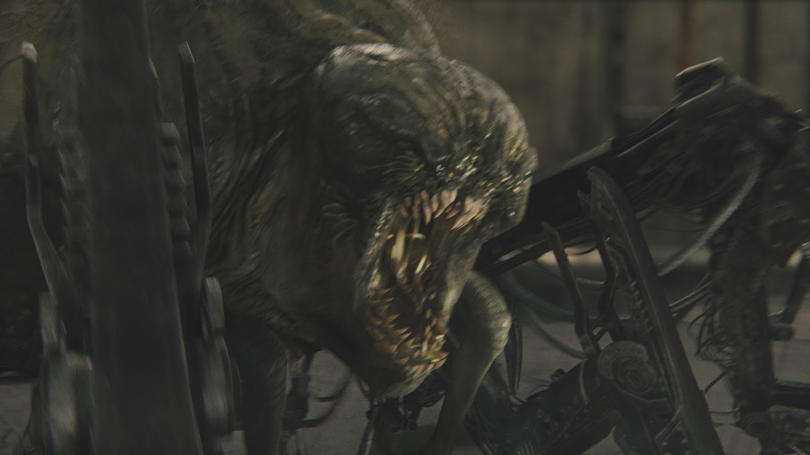

MISTERIOS DEL LABERINTO
Introducción:
Maze Runner: Correr o morir en Hispanoamérica y una serie de películas de ciencia ficción distópicas basadas en el libro homónimo de 2009 de James Dashner. La serie se centra en un grupo de jóvenes que son misteriosamente encerrados en un laberinto gigante y peligroso, donde deben encontrar una manera de detener las letales y misteriosas diversas desolaciones y catástrofes.

Misterios del laberinto:
| Aspecto | LABERINTO EN LAS PELÍCULAS | LABERINTO EN LOS LIBROS |
|---|---|---|
| DIVISIONES Y ESTRUCTURA | Ocho secciones similares. Para salir, una pared y una entrada sustituye el segundo como salida del laberinto. | Ocho secciones formando una especie de cuadrado. Área B es el Área Segura. Pasillos cambian, pero las secciones internas no. |
| SALIDA DEL LABERINTO | La salida está en la puerta B que da a un túnel en el Acantilado. Deben saltar al vacío y llegar al siguiente túnel. | Se necesita una llave del escarabajo para abrir la puerta. Después atraviesan una matando un penitente con un muro. |
| CÓDIGO DEL LABERINTO | Para encontrar el código de apertura debían de tener: SIETE, LABERINTO, SUPERFICIE, CONTAGIO, ATRÁS. Otras palabras clave: EMERGE, ATRAPAR, CÓDIGO, MUERTE, DIFÍCIL, PULSAR. | Secuencia de apertura de secciones, memorizada por Minho e interpretada por Teresa en el ordenador. |
1-¿ Quién creó el laberinto?
El laberinto fue creado por la organización conocida como CRUEL, cuyas siglas en inglés son Catastrophic, Recharge, United, Earth, Labirynth. CRUEL se presenta como una organización que busca realizar experimentos con jóvenes para encontrar una cura para el virus conocido como "La Llamarada", una enfermedad que afecta el cerebro humano y provoca una degradación física y mental en las personas infectadas.

2-¿Por qué los corredores pusieron a los adolescentes en el laberinto?
Los creadores del laberinto, pertenecientes a WICKED (World Catastrophe Killzone Department), engañaron a los jóvenes haciéndoles creer que eran los únicos inmunes al virus que azotaba al mundo. El objetivo era que estos individuos pasaran por un entorno lleno de desafíos y peligros dentro del laberinto para estudiar sus respuestas fisiológicas y cerebrales. A través de este análisis, WICKED esperaba descubrir la clave para la inmunidad y, de este modo, encontrar la cura para el virus.
3-¿Qué les ocurre a los habitantes del laberinto?
Al final del primer libro, los protagonistas descubren que más allá del laberinto se encuentra un mundo devastado por el sol y azotado por una epidemia viral. El laberinto formaba parte de un experimento a nivel global que puso a prueba a los jóvenes supervivientes. En los tomos siguientes, los protagonistas se enfrentan al reto de sobrevivir en ese entorno hostil.
4-¿Qué son los Grievers ?
En los libros, los Grievers son criaturas mecánicas con forma hibrida creadas por la organización CRUEL para poner a prueba a los jóvenes que se encuentran en el Área. Los Grievers emergen del Laberinto por las noches y atacan a cualquiera que se encuentre a su paso.
5-¿Qué significan los códigos del laberinto?
En cuanto a los códigos del laberinto, estos son una secuencia de letras que cambian diariamente y que los habitantes del Área intentan memorizar para encontrar una manera de abrir las puertas del laberinto. Los códigos que Thomas y los otros corredores descubren, y que Teresa introduce en el ordenador al final del primer libro, revelan palabras y frases que dan pistas sobre el propósito del laberinto y la implicación de CRUEL.